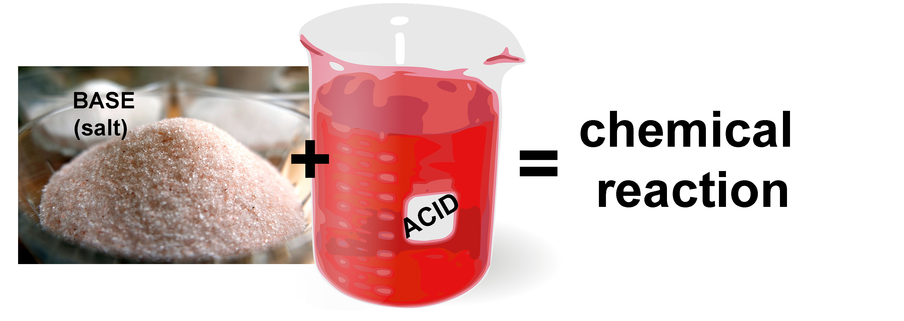

Chemical vs. Physical Reactions/Processes
Types
of processes (or reactions).
In your everyday life, you have seen many different kinds of natural
processes. You've probably watched water boil, observed substances
spread throughout water, like when you add food coloring to water
or make Kool Aid or tea. Or you may have been impressed with
"explosions" that result from combining different chemicals, such as
combining mentos mints and soda/pop or vinegar and baking soda.


Example #1: When someone cooks on a gas stove, methane gas and oxygen react with each other to make the flame we see on the stove. (This is shown in the picture above.) Methane and oxygen react to produce two different types of molecules: carbon dioxide and water. This reaction is shown below:
- Methane molecule & 2 Oxygen molecules —> Carbon Dioxide & Water
- CH4 + 2O2 (Reactants) —> CO2 + 2H2O (Products)
In this reaction, each CH4 (methane) molecule breaks apart into one C (carbon) and four H (hydrogen) atoms. The C atoms join with two O (oxygen) atoms to form a new molecule, CO2 (carbon dioxide). Also during the reaction, the hydrogen atoms join the other two oxygen atoms, forming water (H2O).

Example #2. If you mix hydrochloric acid (HCl), which of course is an acid, and sodium hydroxide (NaOH), which is a base, they react with each other and produce two different substances. These new substances are sodium chloride (NaCl), which is common table salt, and water (H2O).During this reaction, the NaOH molecules break apart into Na, O, and H. The HCl molecules break apart into H and Cl atoms.
The Na and Cl atoms join to form NaCl.
Also, the H atom joins the O and H to form H2O.
The products of the reaction, NaCl (common table salt) and water, are different molecules than HCl and NaOH. So, this is another chemical reaction.
Conservation of matter in chemical reactions
Questions:
What happens to the atoms that make up molecules that react with each other during chemical reactions? (Q1) Are there the same total numbers of atoms before and after reactions? (Q2) Are there the same numbers of each type of molecules before and after the reaction?
(Q1) First, let's look at this example to see if there are the same number of atoms before and after the reaction.
Conservation of matter in chemical reactions
(Q2) Now let's look at this example to see if there are the same number of each type of element (H, Cl, Na, O) before and after the reaction.- There are 2 Hydrogen atoms before the reaction: One in the molecule HCl and one in the molecule NaOH
- After the reaction, there are also 2 Hydrogen atoms: Two in H2O. (The number after the element shows the number of atoms of that element in the molecule. If there is no number after the element, this means there is ONE atom of that element in the molecule. So, in H2O, there are two H atoms and one O atom.)
- There is one atom of Cl before the reaction: in HCl
- There also one atom of Cl after the reaction: in NaCl
- There is one Na atom before the reaction: in NaOH
- There is also one Na atom after the reaction: in NaCl
- There is one O atom before the reaction: in OH
- There is also one O atom after the reaction: in H2O
How can you tell if a reaction is physical or chemical? It may be hard to tell for sure if a reaction is a chemical or physical reaction. But here are some general "rules of thumb" that let you know that a chemical reaction may have occurred:
- The products have different tastes than any of the reactants.
- The products have different boiling or freezing points than any of the reactants.
- There is a temperature change caused by the reactants alone (not by other heat sources, like heating the chemicals on a stove). So, if you use the stove/microwave or refrigerator/freezer (something else) to raise or lower the temperature, that is NOT a sign that a chemical change has happened.
- The products of the reaction are different colors than any of the initial reactants. (Not just becoming a lighter or darker shade of a particular color.)
- One exception to color changes indicating that a chemical process has occurred is when colors are mixed together to form a different color. For example, if you put a drop of blue dye into a glass of water and put a drop of yellow dye into the water, the water will appear to turn green. But this is NOT a chemical reaction. The molecules of blue dye have not changed, and the molecules of yellow dye do not change. The apparent color change results from how our brains process the mixture of colors (see the unit: Color & Color Perception for more information).
.jpg)
- There are also cases of chemical changes in which the products are not different colors from reactants. For example, in a vinegar and baking soda reaction, a chemical change occurs that produces carbon dioxide, water, and sodium acetate. But there is no color change (like baking soda, sodium acetate also happens to be white in color).
Physical processes. Unlike chemical processes, the atoms or molecules that make up the original substances remain the same in a physical process. They don’t change into different molecules like in a chemical reaction.
When substances change their state of matter (for example, change from a solid to a liquid or from a liquid to a gas) their molecules remain the same. So, state changes are physical processes.
The picture below shows water (H2O) in its solid, liquid, and gas states. In each state, the water molecule remains H2O. That is, ice is made of H2O molecules, liquid water is made of H2O molecules, and water vapor is made of H2O molecules.
H2O molecules do not change when liquid water freezes into ice or evaporates into water vapor. H2O molecules do not change when ice melts into water or when water vapor condenses to liquid or solid. So, freezing, evaporating, melting, and condensing are all physical processes. In general, when any substance (not just water) changes state, this is a physical process.
Three states of Matter (Solid, Liquid, and Gas)

Note: An important point is that we can't see a substance in its gas form. The picture of "gas" to the right here actually shows gaseous water vapor cooling and condensing to a liquid or solid form (which we are able to see, because the molecules are more densely packed). Similarly, we can only see clouds because the water vapor (H2O in a gas form) has condensed as it has cooled. (It cools because H2O molecules lose kinetic energy as they collide with slower-moving molecules and atoms in the atmosphere and slow down as a result.)
Dissolving. The process of a substance dissolving into a liquid (often, water) may either be a chemical or physical reaction. This depends on what happens to the substance that is dissolving.
- If the molecules that make up the substance stay the same after dissolving, this is a physical process.
- If the molecules that make up the substance change after dissolving, this is a chemical process.
Hints for Classification Game and Question 2 below (if you need them)...
- Ice melting/freezing (see State change: Evaporation & Melting)
- NaCl dissolving in water (see: Dissolving unit)
- Sugar dissolving in water (see: Dissolving unit)
- CO2 escaping from soda when you shake the bottle before opening it (see: Nucleation unit)
- Burning wood (see: Energy: Sources and Forms unit)
- Photosynthesis (see Photosynthesis unit)
- Yarn absorbing water (see Absorption unit)
Conservation of matter in chemical and physical processes. In both chemical and physical reactions, the total number of atoms that existed before the reaction is the same as the total number of atoms after the reaction.
Also, in both chemical and physical reaction, the total number of each type of atom (or each element) is the same before and after the reaction. So, for example, if there were 5 Hydrogen (H) atoms before a chemical or physical reaction occurs, there must be 5 H atoms after the reaction. If there were 100 atoms of Carbon before the reaction, there must be 100 atoms of Carbon after the reaction.
We can say that matter is "conserved" during all physical and chemical processes. This means that no new matter is made or destroyed during physical or chemical processes. This is the principle of conservation of matter.